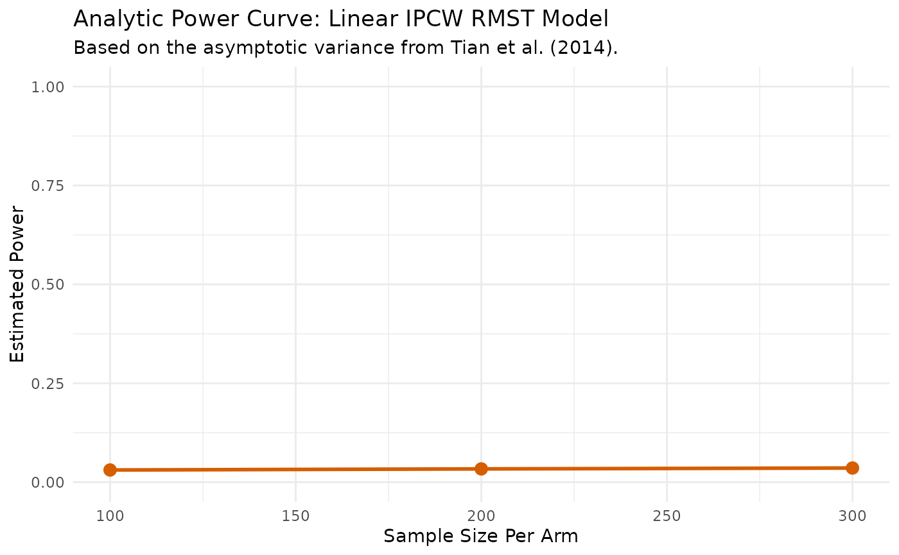

Analyze Power for a Linear RMST Model (Analytic)
linear.power.analytical.RdPerforms power analysis using a direct formula based on the asymptotic variance estimator for the linear RMST model.
Usage
linear.power.analytical(
pilot_data,
time_var,
status_var,
arm_var,
sample_sizes,
linear_terms = NULL,
L,
alpha = 0.05
)Arguments
- pilot_data
A
data.framecontaining pilot study data.- time_var
A character string specifying the name of the time-to-event variable.
- status_var
A character string specifying the name of the event status variable (1=event, 0=censored).
- arm_var
A character string specifying the name of the treatment arm variable (1=treatment, 0=control).
- sample_sizes
A numeric vector of sample sizes per arm to calculate power for.
- linear_terms
An optional character vector of other covariate names to include in the model.
- L
The numeric value for the RMST truncation time.
- alpha
The significance level for the power calculation (Type I error rate).
Value
A list containing:
- results_data
A
data.framewith the specified sample sizes and their corresponding calculated power.- results_plot
A
ggplotobject visualizing the power curve.- results_summary
A
data.framesummarizing the treatment effect from the pilot data used for the calculation.
Details
This function implements the analytic power calculation for the direct linear regression model of the Restricted Mean Survival Time (RMST) proposed by Tian et al. (2014). The core of the method is a weighted linear model of the form $$E[Y_i|Z_i] = \beta_0 + \beta_1 Z_i$$ where \(Y_i = \min(T_i, \L)\) is the event time truncated at \(\L\).
To handle right-censoring, the method uses Inverse Probability of Censoring
Weighting (IPCW). The weight for an uncensored individual i is the inverse
of the probability of remaining uncensored until their event time, \(w_i = \delta_i / \hat{G}(Y_i)\),
where \(\hat{G}(t) = P(C > t)\) is the Kaplan-Meier estimate of the censoring distribution.
Power is calculated analytically based on the asymptotic properties of the
coefficient estimators. The variance of the treatment effect estimator, \(\hat{\beta}\), is derived from a
robust sandwich variance estimator of the form \(A^{-1}B(A^{-1})'\). In this implementation,
A is the scaled information matrix \((X'WX)/n\), and B is the empirical second moment of the
influence functions, \((\sum \epsilon_i \epsilon_i')/n\), where \(\epsilon_i\) is the influence curve
for observation i. The resulting variance is used to calculate the standard error for a
given sample size, which in turn is used in the power formula.
Examples
pilot_df <- data.frame(
time = rexp(100, 0.1),
status = rbinom(100, 1, 0.7),
arm = rep(0:1, each = 50),
age = rnorm(100, 55, 10)
)
power_results <- linear.power.analytical(
pilot_data = pilot_df,
time_var = "time",
status_var = "status",
arm_var = "arm",
linear_terms = "age",
sample_sizes = c(100, 200, 300),
L = 10
)
#> --- Estimating parameters from pilot data for analytic calculation... ---
#> Model: Y_rmst ~ factor(arm) + age
#> --- Calculating asymptotic variance... ---
#> --- Calculating power for specified sample sizes... ---
print(power_results$results_data)
#> N_per_Arm Power
#> 1 100 0.03750270
#> 2 200 0.04399785
#> 3 300 0.04957338
print(power_results$results_plot)
